7. CCS Setup for J721S2¶
Code Composer Studio is an integrated development environment (IDE) that supports TI’s Micro controller and Embedded Processors portfolio. It provides useful tools to develop and debug embedded applications.
Please visit Code Composer Studio product (https://www.ti.com/tool/ccstudio) for more information.
Important
Below screen shots and examples show paths and instructions for Linux. The same applies for Windows except use Windows file/folder paths instead.
In Linux+RTOS mode, SPL/uboot bootloader loads the R5F, C7x, A72 binaries
CCS is needed to debug the software on R5F, C7x (and A72 when in RTOS mode).
In RTOS only mode, CCS is needed to load and run the binaries on different CPU cores in the SoC.
The CCS emulation pack and CSP (Chip Support Package) needs to be downloaded separately.
7.1. CPU names used in PSDK RTOS vs CCS¶
Below table shows the mapping of names in PSDK RTOS and CCS
CPU name in PSDK RTOS |
CPU name in CCS |
|---|---|
mcu1_0 / mcu1_1 |
MCU_Cortex_R5_0 / MCU_Cortex_R5_1 |
mcu2_0 / mcu2_1 |
MAIN_Cortex_R5_0_0 / MAIN_Cortex_R5_0_1 |
mcu3_0 / mcu3_1 |
MAIN_Cortex_R5_1_0 / MAIN_Cortex_R5_1_1 |
mpu1 |
CortexA72_0_0 |
c7x_1 |
C71x_0 |
c7x_2 |
C71x_1 |
7.2. Step 1: Install CCS¶
Install CCS v12.4 : CCS can be downloaded from https://www.ti.com/tool/download/CCSTUDIO/12.4.0
CCS installation details are available on https://dr-download.ti.com/software-development/ide-configuration-compiler-or-debugger/MD-J1VdearkvK/12.4.0/CCS_12.4.0_ReleaseNotes.htm
This release is tested on below CCS version 12.4.0.00007
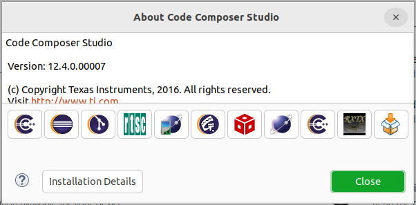Fig. 7.1 CCS: IDE version¶
During installation, there is a ‘Setup’ step where you can select components. Be sure to select: “TDAx Driver Assistance SoCs & Jacinto DRAx Infotainment SoCs” as shown below:
Here after we’ll be referring to the CCS installation directory as ${CCS_INSTALL_PATH}
In Linux, this will be
${HOME}/ti/ccsv1240/ccs
In Windows, this will be
C:\\ti\\ccsv1240\\ccs\
{kind=link}
7.3. Debugging without HLOS running on A72 (RTOS-only / baremetal)¶
Important
This section is applicable only if you are loading an RTOS only application. To debug using CCS when Linux/QNX runs A72, refer section Debugging with HLOS running on A72 (Linux / QNX).
7.3.1. Step 2: Setup CCS target configuration and GELs files¶
Create a CCS target config, you can name it J721S2_EVM.ccxml.
In Code Composer Studio, go to the File menu and select New -> Target Configuration File
Name the Target Configuration file as J721S2_EVM.ccxml and click Finish
Select Connection as Texas Instruments XDS110 USB Debug Probe, if you are using on board debugger (J3 usb connector)
Select Connection as Spectrum Digital XDS560V2 STM USB Emulator, if you are using Spectrum digital XDS560 USB debugger connected to JTAG Mipi connector (J16)
Select the Board as J721S2_TDA4VL shown below
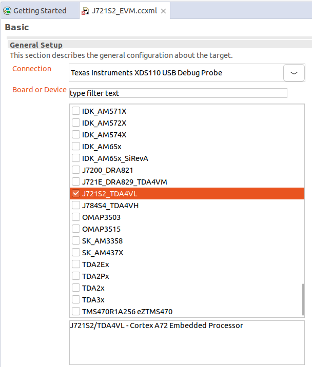Fig. 7.3 CCS: Target Configuration¶
Load the initialization script of the Cortex_M4F_0 core with the J7AEP Gels as shown below.
Open the Advanced tab of the target configuration file J721S2_EVM.ccxml
Go to CORTEX_M4F_0 under SMS_TIFSM
Set the initialization script
Gel files can be found at below path
**${CCS_INSTALL_PATH}/ccs_base/emulation/gel/J721S2_TDA4VL/J7AEP_SI.gel
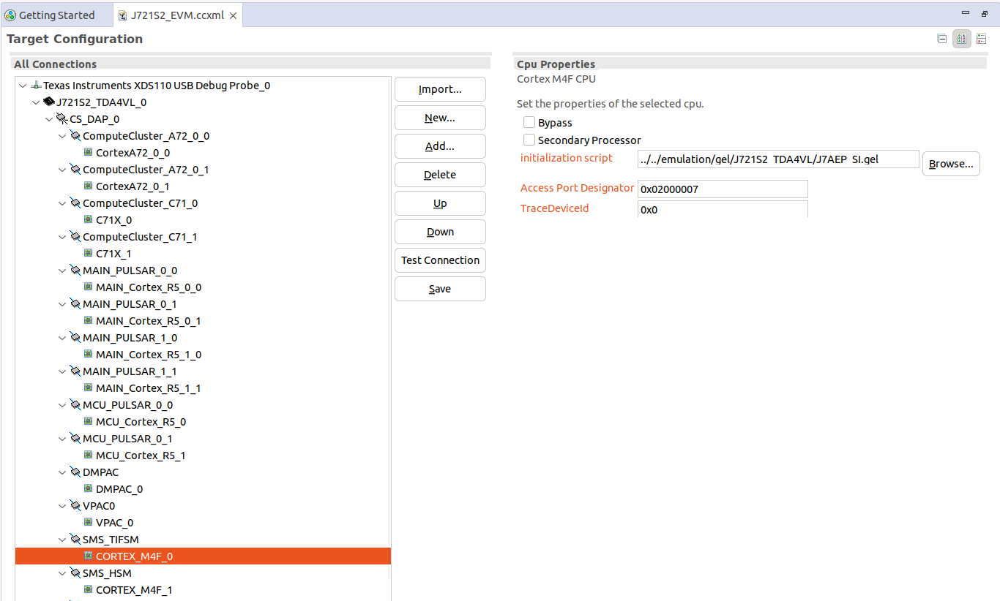Fig. 7.4 CCS: Target Configuration Initialization Script¶
7.3.2. Step 3: Load RTOS/baremetal application binaries thru CCS¶
Note
When using CCS boot flow, please configure EVM in NOBOOT mode ( see No Boot Mode ) for connecting and loading binaries via CCS.
NO BOOT Mode Switch Settings:-
SW8[1-8] = 1000 1000
SW9[1-8] = 0111 0000
The launch.js file below is responsible to load and run the DMSC. It is also responsible to set the board configuration input for the DMSC. The board configuration is passed by the PDK example ${PSDK_RTOS_PATH}/pdk_j721s2_{version}/packages/ti/drv/sciclient/examples/sciclient_ccs_init executing on the MCU R5F core. The default board configuration is available for reference at ${PSDK_RTOS_PATH}/pdk_j721s2_{version}/packages/ti/drv/sciclient/soc/V1/sciclient_defaultBoardcfg.c
All PDK and SDK examples require the DMSC firmware to be executed.
launch.js file is also responsible to load the ${PSDK_RTOS_PATH}/pdk_j721s2_{version}/packages/ti/drv/sciclient/examples/sciserver_testapp which is used to service the RM and PM services on MCU1_0. Refer MCU1_0 Application Development with SYSFW for details. The sciserver_testapp is a simple RTOS based application which runs the Sciserver used to service RM and PM requests from cores other than MCU1_0.
For applications developed and debugged on MCU1_0 application one can disable loading the Sciserver_testapp by setting the loadSciserverFlag to 0. Please do go through the MCU1_0 Application Development with SYSFW page for details on what libraries should be linked on the MCU1_0 application to run RM and PM services.
GEL initialization
Open the launch.js script in an editor. Script is present in below path:
${PSDK_RTOS_PATH}/pdk_j721s2_{version}/packages/ti/drv/sciclient/tools/ccsLoadDmsc/j721s2/launch.js
${PSDK_RTOS_PATH} is the path to your PSDK RTOS installation, for example:
/ti/ti-processor-sdk-rtos-j721s2-evm-xx_xx_xx_xx
Edit the variable “pdkPath” with the absolute path of the pdk package, i.e ${PSDK_RTOS_PATH}/pdk_j721s2_{version}/packages
Open Code Composer Studio and launch the Target Configuration previously setup
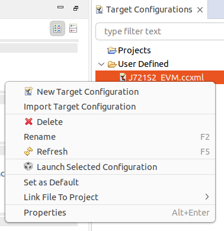Fig. 7.5 CCS: Launch CCS Target Configuration¶
Go to the View Target configurations and launch a target configuration is done by right clicking on it.
Open the scripting console in CCS - Go to the View menu and then select Scripting Console
Load the launch.js script as shown below.
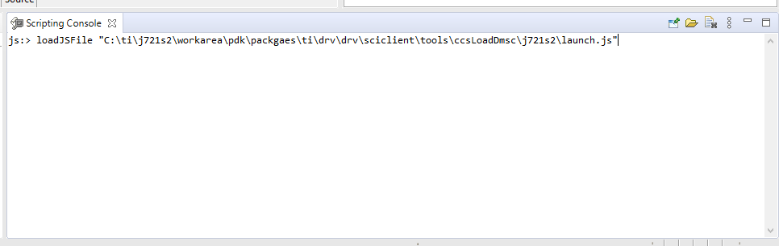Fig. 7.6 CCS: Launch script¶
Wait till the script finishes. This step can take considerable time as it configures PLL etc. in the SOC via GEL files and configures DDR. This will connect to the MCU_Cortex_R5_0 core.
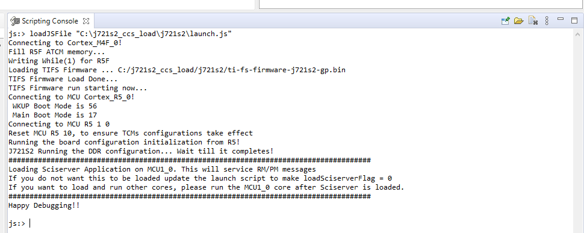Fig. 7.7 CCS: Scripting Console Output¶
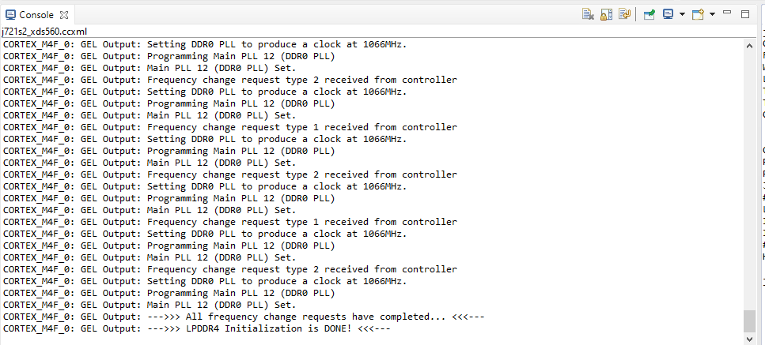Fig. 7.8 CCS: Console Output¶
After script completes execution you should see below in Debug window
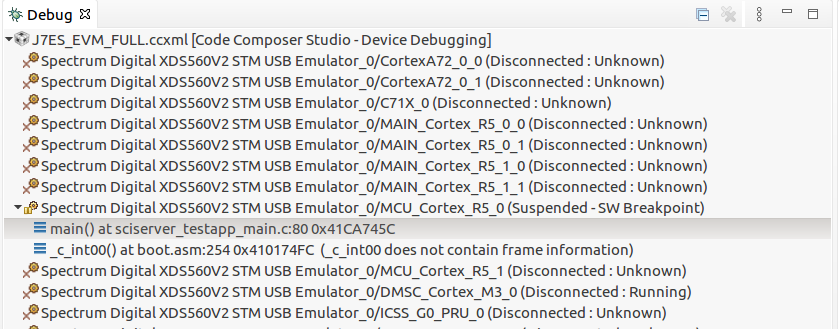Fig. 7.9 CCS: Launch script Complete¶
Load and run the binaries in CCS. Debug as usual using CCS.
Now you can connect to any core and load the corresponding application binaries.
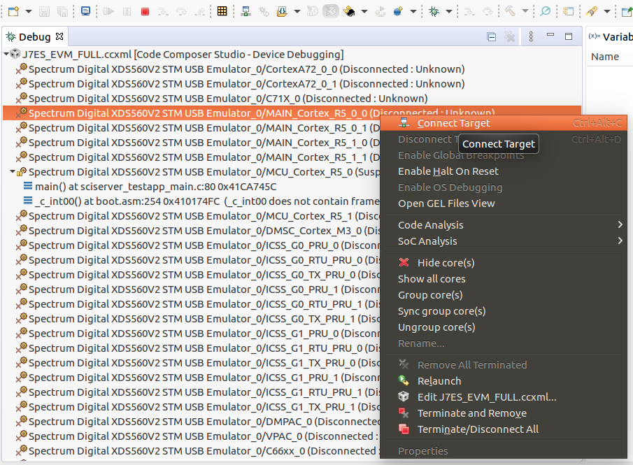Fig. 7.10 CCS: Loading the demo application binary¶
Go to the Run menu and then select Load -> Select Program to Load
In the Load Program window, browse to application binary you want to load.
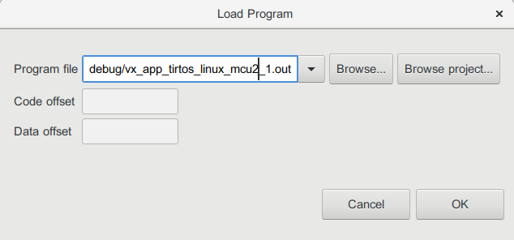Fig. 7.11 CCS: Loading the demo application binary¶
Go to the Run menu and then select Resume to start executing demo binary.
7.4. Debugging with HLOS running on A72 (Linux / QNX)¶
Important
This section is applicable only if you are loading a HLOS (Linux or QNX) application. To debug RTOS cores using CCS when not running Linux or QNX on A72, refer section Debugging without HLOS running on A72 (RTOS-only / baremetal).
CCS cannot be used to debug applications on the A72. For Linux, it is recommended to use gdb which comes preinstalled on the filesystem. For QNX, it is recommended to use QNX Momentics.
7.4.1. Step 4: Setup CCS target configuration¶
Install CCS, CCS emulation packs and the CSP as per Step 1: Install CCS.
Create a CCS target config, you can name it “J721S2_EVM_NO_GEL.ccxml”.
Select Connection as Texas Instruments XDS110 USB Debug Probe, if you are using on board debugger (J3 usb connector)
Select Connection as Spectrum Digital XDS560V2 STM USB Emulator, if you are using Spectrum digital XDS560 USB debugger connected to JTAG Mipi connector (J16)
Select the Board as J721S2_TDA4VL shown below
Fig. 7.12 CCS: Target Configuration¶
Remove the gel file path (....emulationgelJ721S2_TDA4VLgelJ721S2.gel) from CORTEX_M4F_0 under SMS_TIFSM
7.4.2. Step 5: Load RTOS core firmware symbols thru CCS¶
Load the debug version of the firmware binaries on the HLOS file system, and boot device.
Launch the target config file created
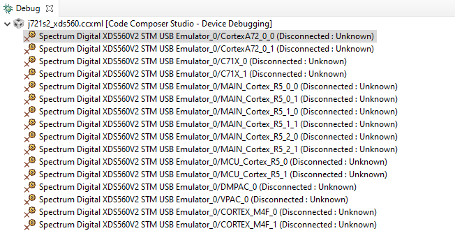Fig. 7.13 CCS: Target Configuration launched¶
Now you can connect to the required non-A72 core (i.e R5, C7x_0 etc) and load the symbols of the application binary.
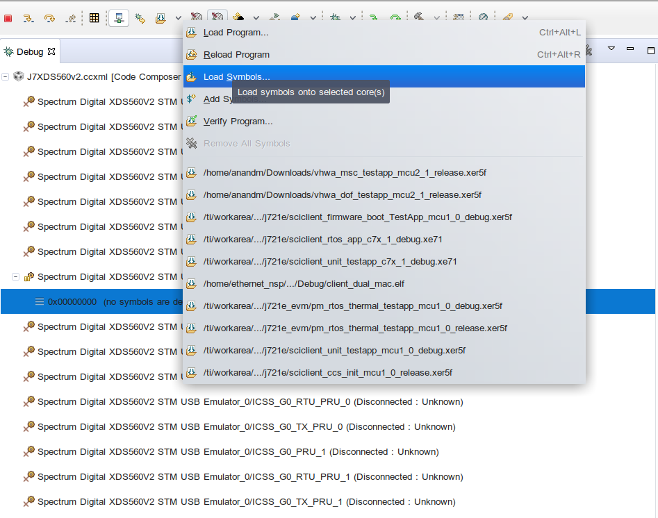Fig. 7.14 CCS: Load symbols in the connected non-A72 core¶
Now you can put breakpoints wherever required and debug as usual.